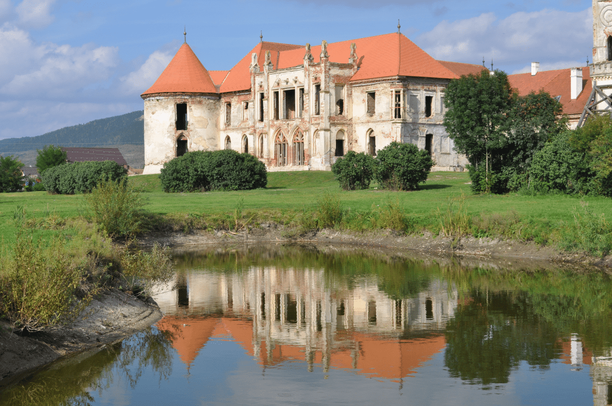
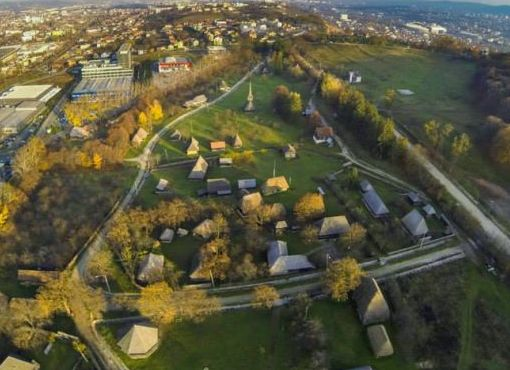
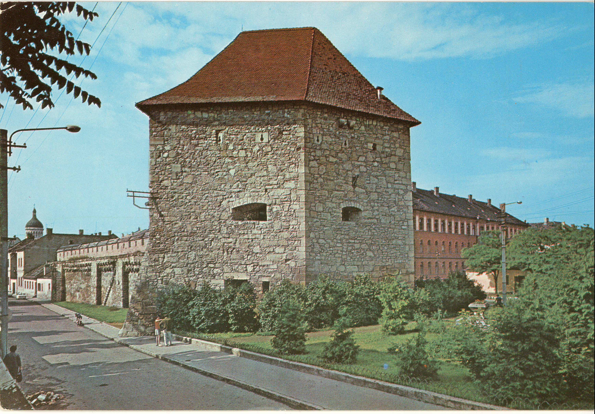
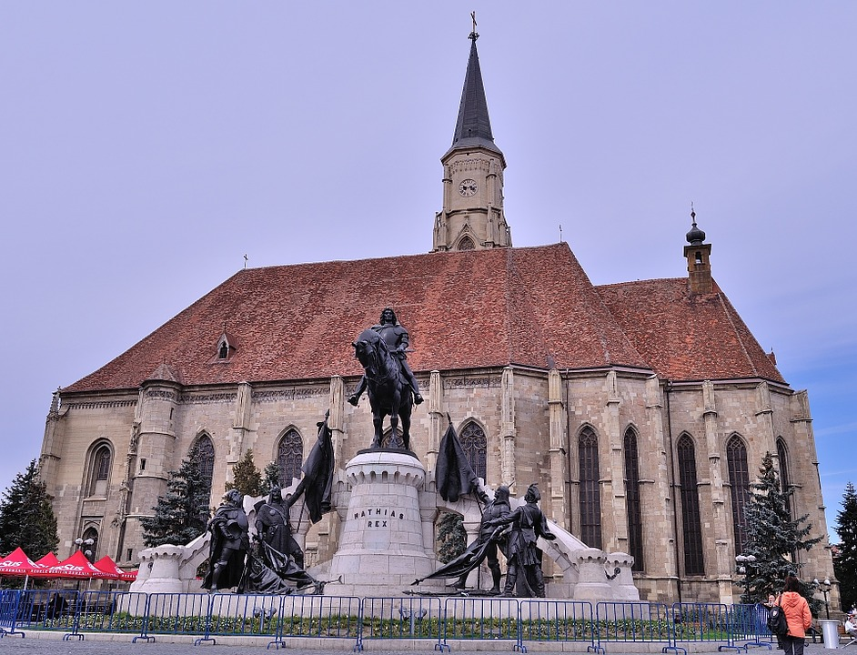
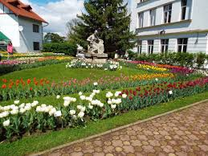

Descopera Orasul Cluj-Napoca: Obiective Turistice
1. Castelul Bánffy de la Bonțida

Aflat la 30 de kilometri de oraș, pe malul drept al Someșului Mic, castelul a fost construit în stilul baroc, cu edificii renascentiste. Însuși Prințul Charles al Marii Britanii a fost cucerit de frumusețea castelului, despre care legenda spune că ar fi bântuit.
Se presupune că prințesa care a trăit în castel era îndrăgostită de cineva dinafara familiei regale, iar acest lucru a fost aflat de unul dintre băieții de la grajduri. Pentru a nu fi demascată, prințesa l-a sedus pe acesta și l-a ucis cu un cuțit. Povestea spune că sufletul tânărului nu a părăsit niciodată castelul, bântuindu-l până în zilele noastre.
2. Parcul Etnografic Național Romulus Vuia

Dacă ești interesat de istoria și etnografia poporului român, nu ai cum să tai de pe listă Parcul Romulus Vuia. Acesta este primul muzeu în aer liber înființat vreodată în România, care datează tocmai din anul 1929, când parcul măsura 75 de hectare. Imaginea actuală a acestui obiectiv turistic este rezultatul mai multor transformări prin care acesta a trecut de-a lungul timpului.
Al Doilea Război Mondial era cât pe ce să îi fie fatal, perioadă în care majoritatea construcțiilor adăpostite aici a fost distrusă. Oamenii de cultură ai vremii și-au dat silința să îl reconstruiască și să aducă la viață vechile gospodării, care fie fuseseră bombardate, fie fuseseră mutate în cadrul altor muzee, pentru a fi protejate.
Astăzi, muzeul îi cheamă pe toți cei care sunt curioși să vadă, în mărime naturală, cum arătau casele, grajdurile sau alte așezări din gospodăriile Transilvaniei de altădată. Selectate riguros și explicate în detaliu pe tăblițele din fața exponatelor, piesele expuse în Muzeul Etnografic Național Romulus Vuia numără cele mai valoroase monumente de arhitectură din Patrimoniul Etnografic al României.
3. Bastionul Croitorilor

Colțul de sud al Vechii Cetăți a Clujului poartă numele de Bastionul Croitorilor. Acesta este și unul dintre puținele turnuri fortificate care s-au păstrat intacte până în zilele noastre. Numele său vine de la breasla meșteșugarilor din Cluj, așa cum numele celorlalte turnuri ale cetății au aceeași etimologie (cizmarilor, tâmplarilor, săpunarilor, rotarilor, zidarilor sau curelarilor).
Bastionul Croitorilor a fost ridicat în anul 1475 și recondiționat de către Gabriel Bethlen între anii 1627-1629. Ridicat din piatră dăltuită, acesta era, alături de celelalte turnuri ale cetății, o adevărată strajă asupra Clujului de altădată. Bastionul Croitorilor este și locul în aproprierea căruia a fost expus trupul lui Baba Novac, general al lui Mihai Viteazu, tras în țeapă. În cinstea acestuia, în anul 1975 sculptorul Virgil Fulicea i-a dedicat o operă de artă, care este expusă în vecinătatea bastionului.
Monumentul a fost transformat în muzeu, iar în prezent acesta găzduiește Centrul de Cultură Urbană, care cuprinde o cafenea la subsol, o sală de conferință și mai multe spații expoziționale.
4. Centrul Istoric din Cluj

În Piața Avram Iancu vei avea ocazia să te reculegi preț de câteva minute la Catedrala Mitropolitană. Construcția este a treia ca mărime din țară, după cea ortodoxă din Timișoara și cea evanghelică din Sibiu, a fost ridicată în stil bizantin și măsoară 64 de metri în înălțime.
Și dacă tot ajungi în această zonă, nu uita să te plimbi pe bulevardul Eroilor, care este considerată cea mai pitorească parte a Clujului. Acolo străjuiesc de sute de ani clădiri de o importanță mare, de care te poți lăsa impresionat.
5. Gradina Botanica din Cluj-Napoca

Nu trebuie să fii pasionat de plante pentru a merge să vizitezi o grădină botanică, mai ales când vine vorba de una atât de frumoasă, cum este cea din Cluj. Deschisă încă din anul 1925, Grădina Botanică Alexandru Borza se întinde pe o suprafață de 14 hectare, așadar suficient spațiu pentru a-ți oferi liniștea și deconectarea de care ai nevoie, în inima naturii.
Acolo te așteaptă peste 10.000 de specii de plante, grupate pe sectoare. Vei putea admira plante ornamentale rare și vei putea înțelege mai multe despre fiecare. Dacă ajungi să o vizitezi în perioada estivală, nu uita să iei cu tine și o pătură, ca să poți medita câteva momente, la umbra unui copac mai bătrân decât România.